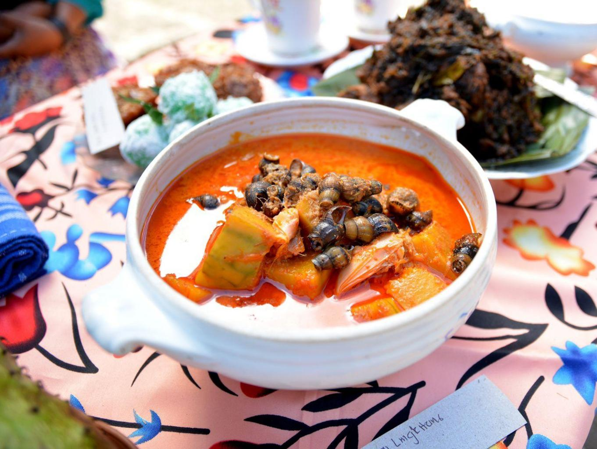
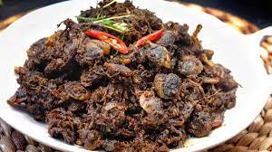
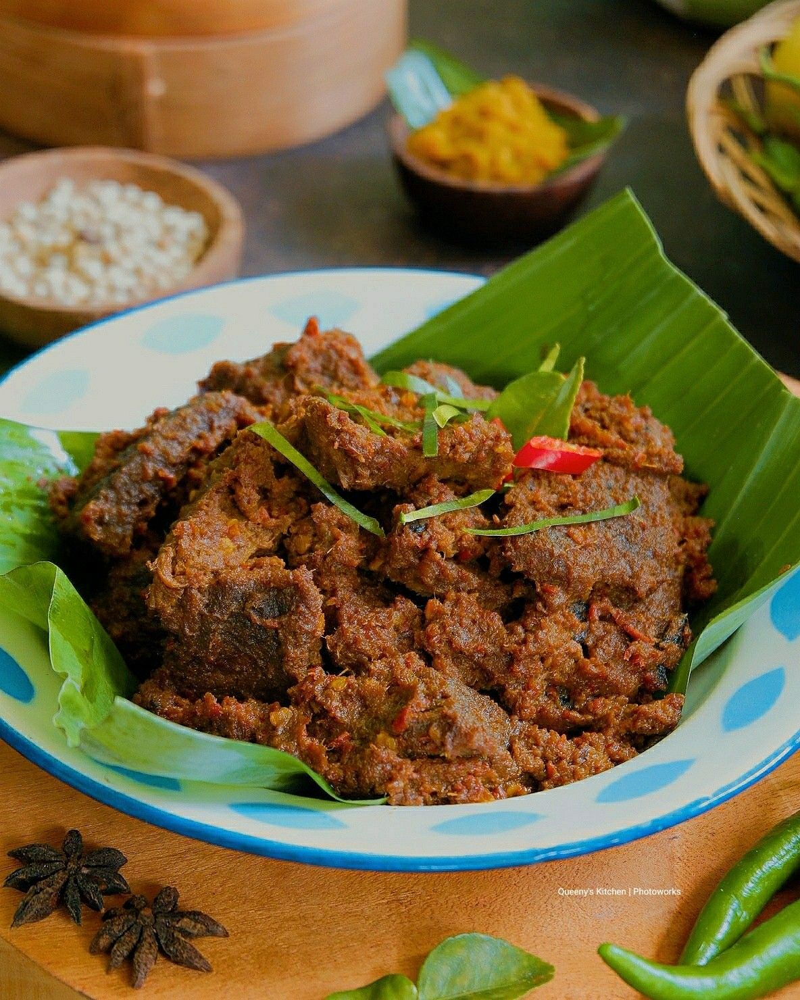
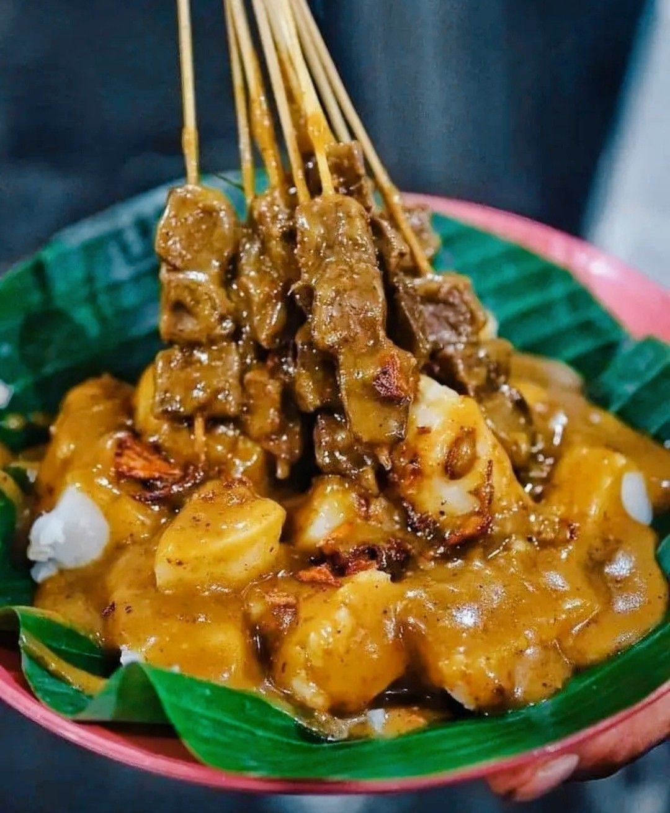
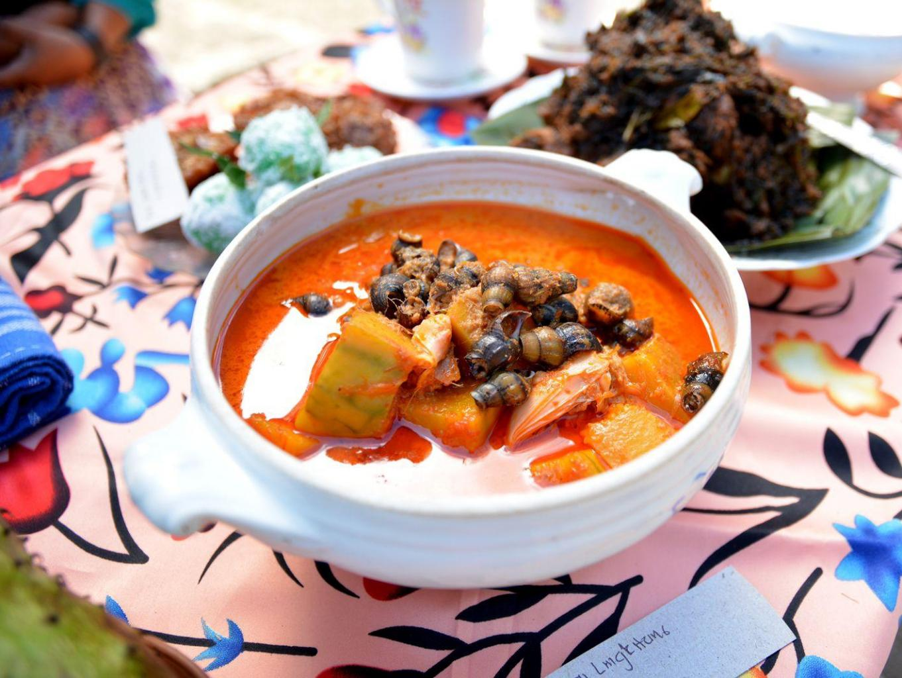
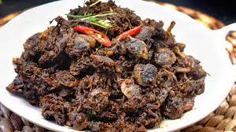
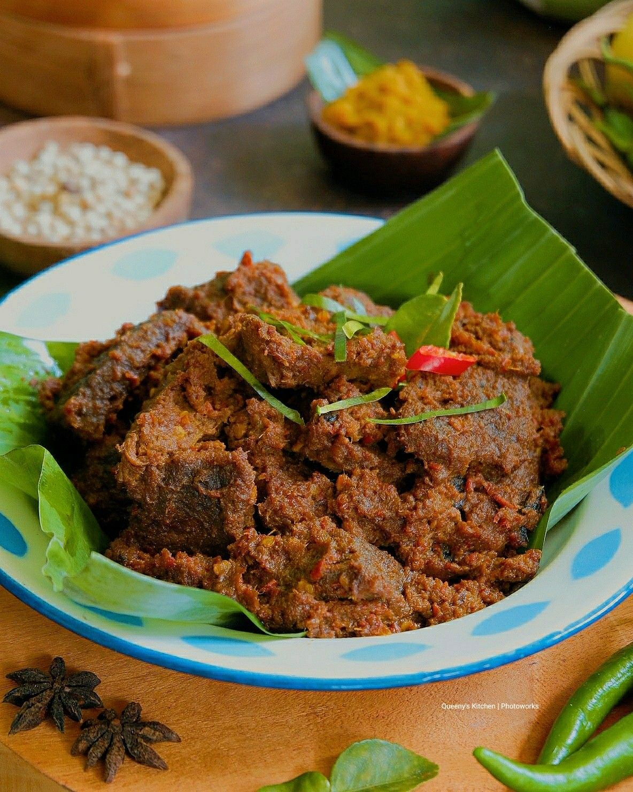
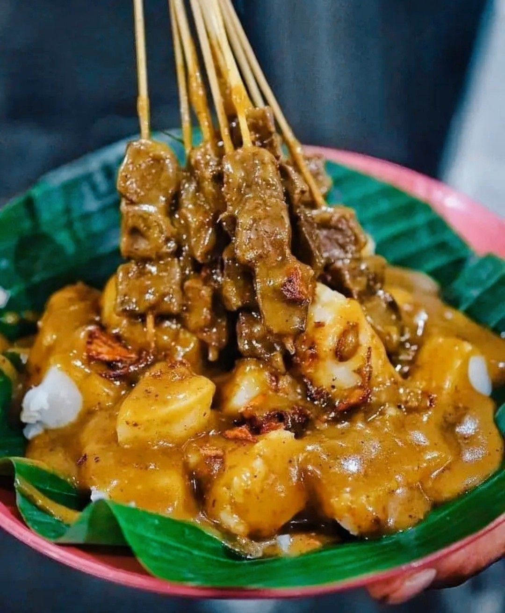

About Me
Hello Everyone
Saya adalah seorang mahasiswa yang berasal dari Sumatera Barat dan sedang menempuh pendidikan di program studi Informatika di Universitas Muhammadiyah Malang. Saya memiliki kecintaan yang tinggi terhadap daerah saya, terutama masakan khasnya yang sudah dikenal oleh banyak orang. Beberapa contoh masakan khas daerah saya adalah rendang, sate padang, dan gulai. Saya selalu berusaha untuk memperkenalkan masakan-masakan ini kepada teman-teman saya di kampus dan di luar kampus. Saya merasa bangga dengan budaya dan kuliner daerah saya yang kaya dan lezat.

 






